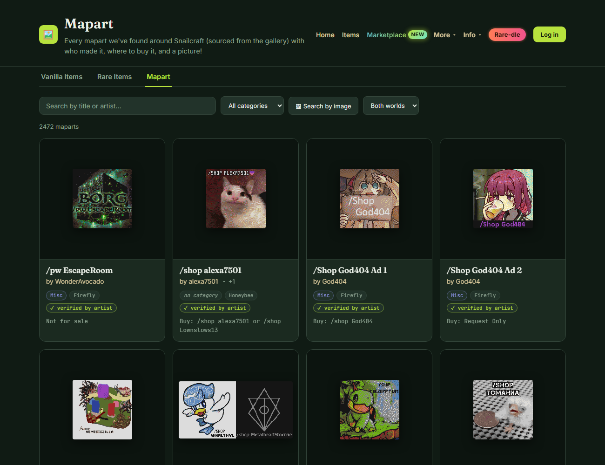
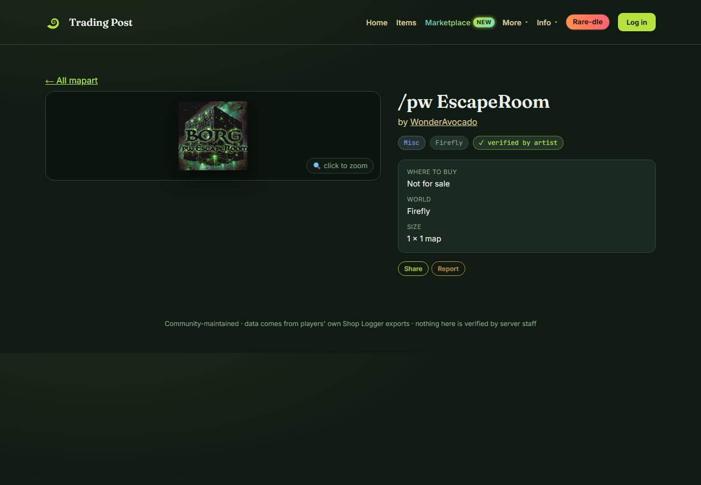
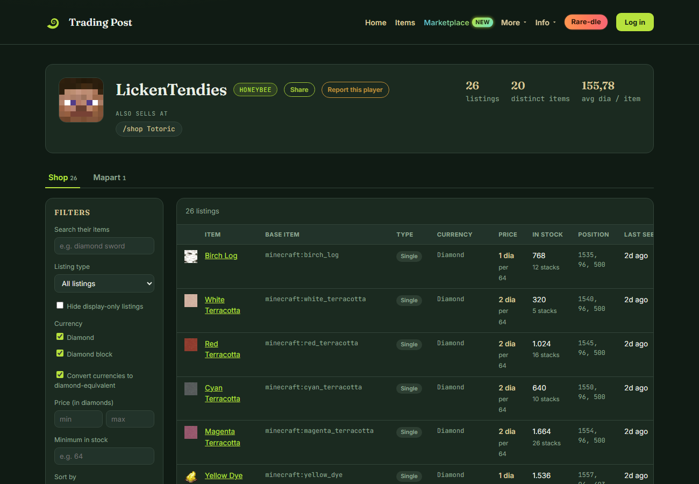
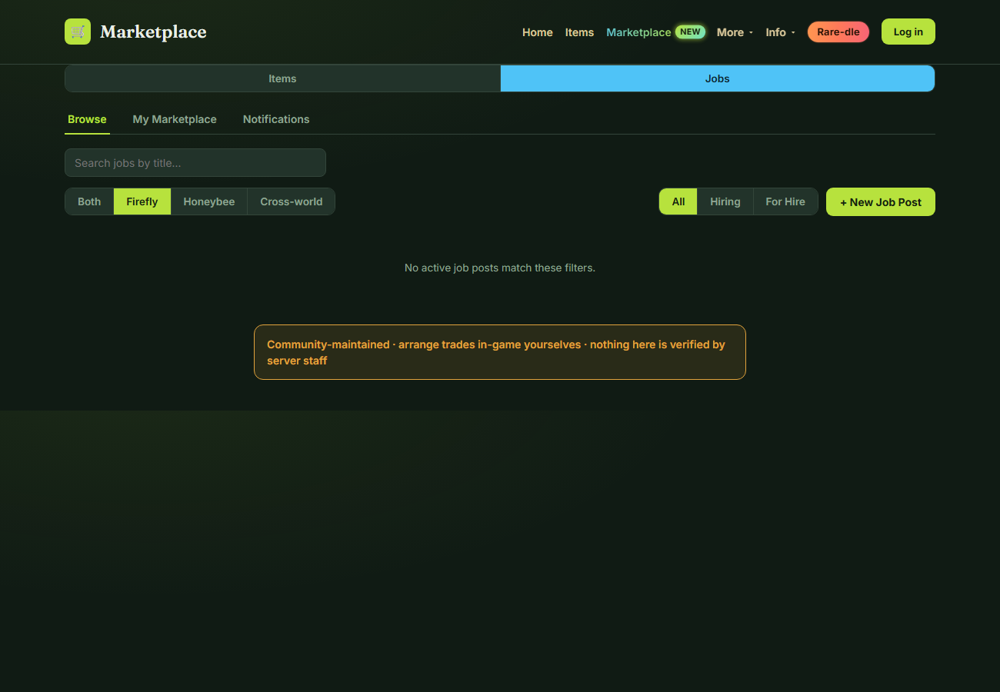
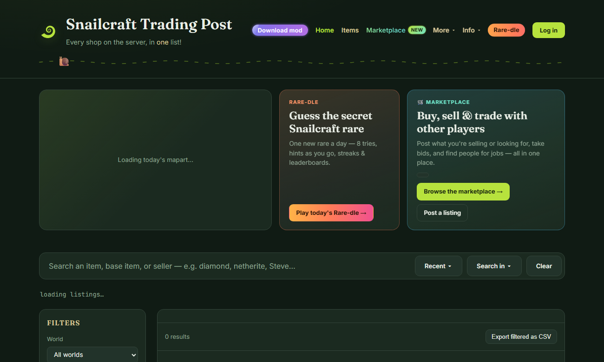

Mapart catalog
ALL NEWSnailcraft's mapart, all in one searchable place: title, artist, world, category, where to buy it, and a picture — sourced from the gallery and now scanned automatically by the mod too.


Collections
ALL NEWA personal checklist for rare items and mapart, per world — tick things off as you get them, and share your progress on a public profile page if you want to.
Toggle from any card or detail page; view everything at /collection/, public by default at /collection/<username> unless you make it private.
Public profiles
ALL NEWThe old seller page is now a full tabbed profile — Shop, Mapart (with open commissions), Collection, and Marketplace history, all in one place at each player's own URL.

Job listing reviews
ALL NEWMarketplace job posts (hiring or for-hire) can now be rated thumbs up or down by anyone who isn't the poster — and every rating rolls up into a seller rating shown right on that player's profile.

Rare-dle
ALL NEWA daily Wordle-style guessing game built around Snailcraft's own rare items — one secret rare a day, 8 tries, per-attribute feedback, streaks, and a sharpening pixel hint the longer you're stuck.

Smaller website upgrades
A pile of quality-of-life changes across the main table and item pages.
- Hide any column in the results table, bring it back from "Columns ▾".
- Diamond-equivalent pricing everywhere, on by default — see raw currency any time with one toggle.
- "Did you mean…?" suggestions when a search comes up nearly empty.
- Price check on every rare item page — a general value per world, from every active listing.
- Undercut alerts and reprice/restock hints on My Shop Statistics.
- Redesigned nav with More and Info menus, and a home page featured strip for mapart of the day, Rare-dle and the marketplace.

Mod 2.0
The mod got just as big an update — full details on the mod walkthrough, short version here.
- Mapart scanner, built right in — finds and uploads mapart automatically, no separate tool.
- Ignore this listing on watchlist alerts, without losing the rest of your watchlist for that item.
- Advanced Settings screen for scan log format, per-shop cooldown, teleport beam style and more.
- Now ships four builds: Fabric 26.2/26.3 and NeoForge 26.2/26.3.
/preview
NEW IN 2.1Live-preview a colored, styled rename on the item in your hand before you commit to it for real — type the name with &#RRGGBB hex color blocks and see it applied instantly.
- Hold the item, then run
/preview &#FF0000Cool �FF00Sword— the color blocks apply to whatever text follows them, and you can mix as many colors in one name as you like. - It's a client-side-only preview — nothing is actually renamed on the server, so there's no cost and no commitment either way.
- Move or drop the item (or just wait for the next server sync) and the preview clears itself automatically.
New download flow
The download popup was rebuilt around a simple loader + version picker instead of a flat list of files.